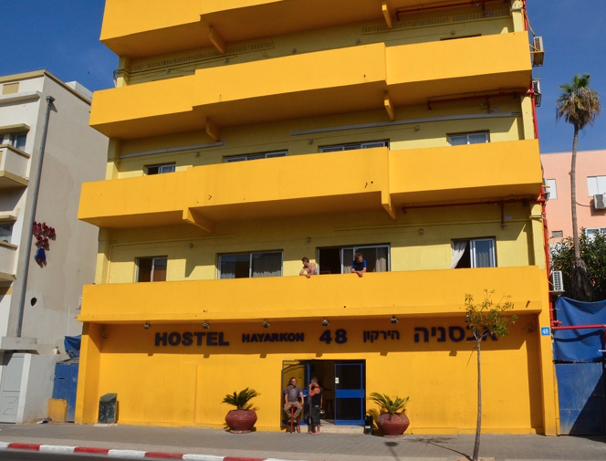

For this page, I am going to dive into hostel living in Israel. The most popular region for hostel living is around the Sea of Galilee. This page will feature a background on hostel living & two different, popular hostels within the Sea of Galilee region: David Hostel and Aviv Hostel. After reading, you'll be able to see if a hostel stay will be in your next vacay.
What's Hostel Living?

Hostel living in Israel is popular, but nowhere is it more popular than in the Sea of Galilee region. In this area, you will find a massive amount of university students, individual tourists, and young adults living in hostels. Hostels are lower-priced living solutions that offer basic, shared accommodations. If you are traveling alone and would like an immersive, collective experience with others – a hostel is your best bet. Hostels can range in privacy, price, and accommodations available. After explaining what hostel living is and who it is for, let’s get into two great options within the Sea of Galilee region.
David Hostel
David Hostel is an incredible option. Friends from my university have traveled to this hostel to meet host, David, and explore the surrounding Sea of Galilee. David owns and hosts alongside his sisters, which make for a comfortable environment. There were other students traveling, which made for great company in the hostel. The hostel has been visited and enjoyed by other 300 people. Privacy and fun are prioritized, as there are rented canoes you are free to use as well as bicycles! Hear is a common review from an American student, Darcy ‚ÄúVery nice people who went out of their way to make you feel comfortable üòÄ‚Äù.
Aviv Hostel

Another hostel is called Aviv Hostel. Now this spot differs as it appears and functions more like a hotel. Different from David Hostel, known for its staff of helpful family, Aviv Hostel is known for its location. The dining at Aviv Hostel is exceptional. You will never go hungry here – as there are massive smorgasbords of Mediterranean snacks, fruits, salads, and vegetables. In the end, deciding on which hostel to stay, it depends on what you value most. These two hostels are incredible for different reasons, so which one would you choose?